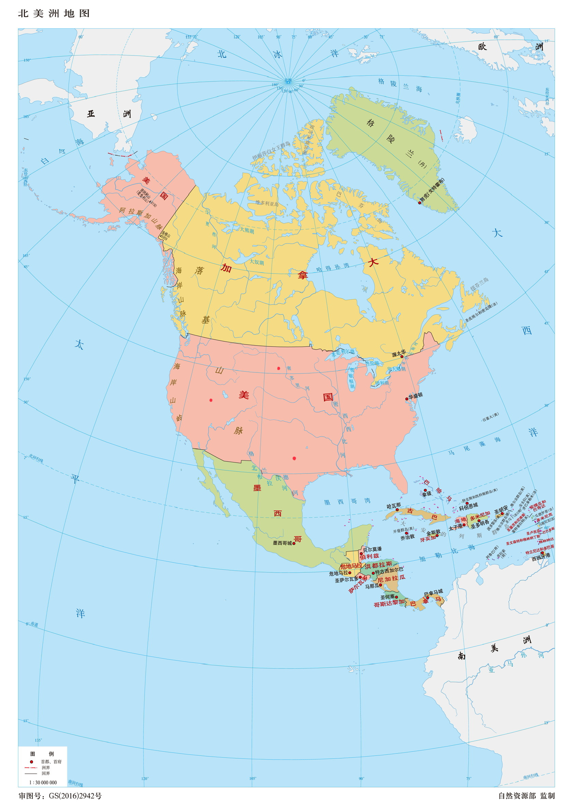
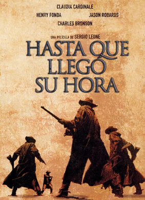
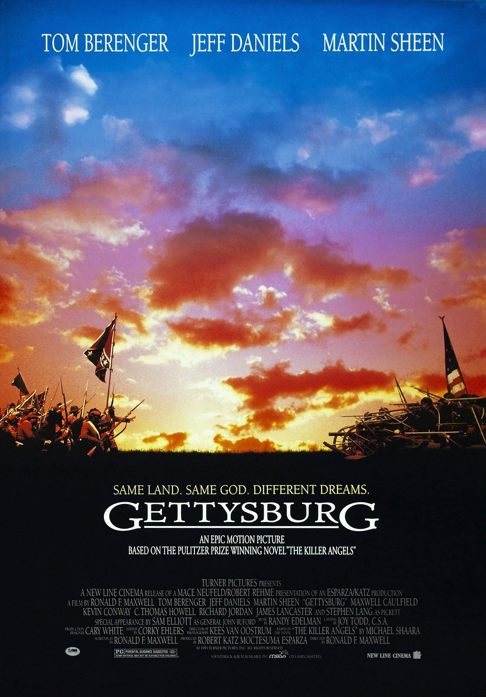
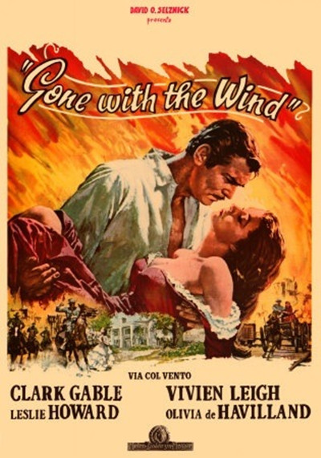
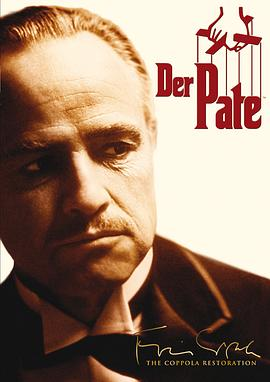

Back to top
意大利西部片宗师瑟吉欧·莱昂的传世经典之作，继与克林伊斯威特合作「镖客三系列」之后，瑟吉欧·莱昂这部近三个小时的长篇钜作，被称之为影史上最伟大的西部片。故事叙述一名神秘客（查理士布朗逊）来到小镇上，被卷入一名寡妇（克劳蒂雅卡迪奈尔）与铁路大亨的土地抢夺战，此片最有趣的角色，是由一向形象正义的亨利方达，难得在此片中扮演一名冷面的残酷杀手，从头到尾几乎没有表情，只有嘴角偶尔小有动作，让人不寒而栗... 当年影片在美国上映时，曾因为片长过长而被片商修剪，导致故事架构含混不清，语焉不详。

Back to top
1863年7月1日，十五万名士兵在命运安排下，相会于美国的盖兹堡；他们各自为了理想中的民主政治抛头颅洒热血。结果，有三分之一的人倒于寂静的麦田中；他们的生命创造了南北战争的转折点，这场战役是历史上的盖兹堡大战。

Back to top
美国南北战争前夕，南方农场塔拉庄园的千金斯嘉丽（费雯·丽 Vivien Leigh 饰）爱上了另一个农场主的儿子艾希礼（莱斯利·霍华德 Leslie Howard 饰），遭到了拒绝，为了报复，她嫁给了自己不爱的男人，艾希礼妻子梅兰妮（奥利维娅·德哈维兰 Olivia de Havilland 饰）的弟弟查尔斯。
战争期间，斯嘉丽成为寡妇，失去母亲，挑起生活的重担， 不再是当初的千金小姐；战争结束后，她又两度为人妻，嫁给了爱她多年的投机商人瑞德（克拉克·盖博 Clark Gable 饰）。
然而，纵使经历了生活的艰苦，斯嘉丽对艾希礼的感情仍然没有改变。艾希礼妻子梅兰妮的去世，给了斯嘉丽一个机会，一边是深爱自己的丈夫瑞德，一边是心心念念多年的艾希礼？斯嘉丽会给自己怎样一个不一样的明天？

Back to top
40年代的美国，“教父”维托·柯里昂（马龙·白兰度 饰）是黑手党柯里昂家族的首领，带领家族从事非法的勾当，但同时他也是许多弱小平民的保护神，深得人们爱戴。
因为拒绝了毒枭索洛索的毒品交易要求，柯里昂家族和纽约其他几个黑手党家族的矛盾激化。圣诞前夕，索洛索劫持了“教父”的参谋汤姆，并派人暗杀“教父”；因为内奸的出卖，“教父”的大儿子逊尼被仇家杀害；小儿子麦克（阿尔·帕西诺 饰）也被卷了进来，失去爱妻。黑手党家族之间的矛盾越来越白热化。
年老的“教父”面对丧子之痛怎样统领全局？黑手党之间的仇杀如何落幕？谁是家族的内奸？谁又能够成为新一代的“教父”？
血雨腥风和温情脉脉，在这部里程碑式的黑帮史诗巨片里真实上演。